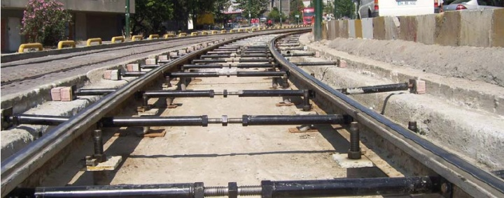
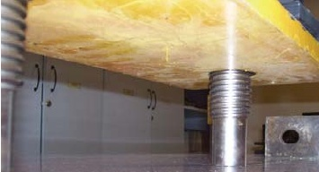
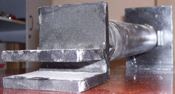

|
Bir ray teknolojisinin hikâyesi ve Ýstanbul Ulaþým'ýn ilk patenti:
Ýstanbul Ulaþým A.Þ. / Raylý Sistemler Bülteni, Ocak - Þubat - Mart 2008
Ýstanbul Büyükþehir Belediyesinin iþtiraklerinden biri olan Ulaþým A.Þ. Zeytinburnu- Eminönü cadde tramvay hattýnýn da bakým ve iþletmesini yapmaktadýr. Bu hattýn 1992 tarihinde iþletmeye açýlmasýyla Ýstanbul'da þehir içi raylý sistemlerine de bir giriþ yapýlmýþ oldu. Ýstanbullularýn bu ilk cadde tramvayýna kavuþmuþtu, ancak iþ biraz aceleye getirilmiþti. Bu sebeple hattýn kýsa bir dönem sonra rehabilete edilmesi gerekiyordu. Bu rehabilitasyon çalýþmalarýna 1996 yýlýnda yoðun bir þekilde girildi.

Bakýmlardan amaç; halký bu hizmetten mahrum etmeden ve belediyenin gelirini de düþürmeden tramvay iþletmesini ayakta tutmaktý. Bu çalýþmalar 2007 marta ayýna kadar lokal çalýþmalar þeklinde de devam etti. Özellikle rayýn oturduðu zemin ray altý taþý ve mýcýr olmasý sebebiyle, sürekli ray altlarýnda boþluk oluþmasýna, rayda aþýnmaya, yolcu konforu bozulmaya baþlandý. Bunun için de en problemli olan yol kesimleri kazýlarak yolun altyapýsýnýn tamamen deðiþtirilmesi yani rayý betona sabitlemek gerekiyordu. Ýþte bu çalýþmalar için sürekli çalýþmasý gereken, iþletmeyi de durdurmadan bir teknoloji üretilmeliydi.

Ulaþým A.Þ.'nin mühendis, tekniker ve ustalarý katýlmalý bir yönetim biçimi ile baþ baþa vererek teknolojik bir çözüm arayýþýna girdi ve yeni bir teknolojiyi keþfetti. Önce tasarýmlar, sonra prototipler daha sonra ise uygulamaya geçildi. Sonuç; harikaydý. Seferlerin bitiminden sonra yapýlan hattý rehabilite etme çalýþmalarý hýz kazanmaya baþladý. On günde betona tespitli hale getirilen 20 metrelik bir yol, artýk bir gecede yapýlmaya baþlandý. Gerek kalite bakýmýndan gerekse ekonomik yönden son derece iþ hýzlanmýþ oldu. Þimdi artýk dünyada benzeri olmayan bu teknolojinin ülkemizde patent haline getirilmesi ve dünya demiryolu teknolojisine katkýda bulunma hedefi ve zamaný gelmiþti. Bunun için bir mühendis, iki vardiya amiri teknikerinin yaptýðý çalýþma ve onlara destek olan müdür, þef ve diðer teknik elemanlarýn desteði ile yeni bir teknoloji ortaya çýktý.
"Ulaþým Ray Sabitleme Aparatlarý Seti" olarak imal edilen, kýsaca "URAYSAS" olarak belirlen bu teknolojinin 09/01/ 2008 tarih 2007-G-5118 numarasý ile Türk Patent Enstitüsü'nde giriþi yapýldý...
Kaynaklar:
- www.samanyoluhaber.com/haber-142392.html > Ýlk yerli tramvay gün yüzüne çýktý > Samanyolu Haber, 18-03-2009
- www.zaman.com.tr/haber.do?haberno=827064... > Türkiye'nin ilk yerli tramvayý seferlerine baþladý, ZAMAN, 18-03-2009
- www.cnnturk.com/2009/turkiye/03/17/yerli.tramvay... > Yerli tramvay yarýn hizmete girecek, CNN Türk, 18-03-2009
- www.ibb.gov.tr/tr-TR/Haberler/Pages/Haber.aspx?NewsID=17157 > Yerli tramvay ve hafif metro aracý üretimi hýz kesmeden devam ediyor, Ýstanbul Büyükþehir Belediyesi, 14-03-2009
- www.istanbul-ulasim.com.tr/dergi/2008/0108.pdf > Ýstanbul Ulaþým A.Þ. / Raylý Sistemler Bülteni, Ocak - Þubat - Mart 2008
- www.istanbul-ulasim.com.tr/... > RTE 2000 Yeniden Seferde, Ýstanbul Ulaþým A.Þ., 21-02-2007
- www.istanbul-ulasim.com.tr/dosya/proje_tr.pdf > Ýstanbul Ulaþým A.Þ. / Proje tanýtým broþürü
- www.istanbululasim.com/... > Ýstanbul Ulaþým A.Þ.'de Görev Deðiþimi, Ulaþým Web - 14-11-2007
- http://wowturkey.com/forum/viewtopic.php?p=1132430 > wowTURKEY.com > Forum: ULAÞIM - Ýstanbul > ÝST » C4.15. Yerli Tramvay (RTE 2000'den günümüze geliþtirilen modeller hakkýnda bilgi ve görüþler içeren, bir forum)
|